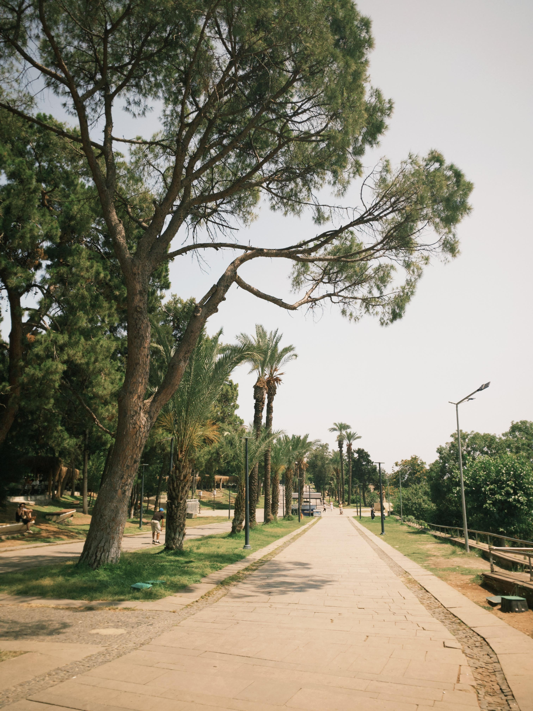
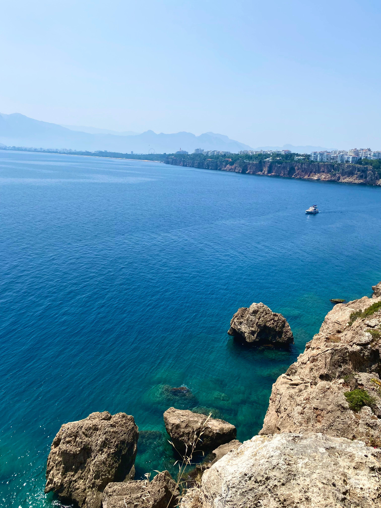

The way the misty mountains of Antalya peek through the soft needles of the pine trees creates such a serene, dreamlike atmosphere. I love how the palm fronds in the foreground add a tropical touch, making it feel like you have discovered a hidden, quiet viewpoint overlooking the Mediterranean. The soft, muted colors give the whole scene a really peaceful "vacation morning" vibe. It is a beautiful shot that perfectly captures the tranquil side of the coast.

This pathway in Antalya looks like the perfect spot for a long, quiet afternoon stroll. I love how the tall trees lean over the walkway, creating a natural shaded canopy that makes the whole scene feel tucked away from the world. There is a really nice warmth in the light that brings out the bright summer greenery and that signature relaxing energy of the coast. It’s a great shot that really captures that "on vacation" feeling where you can just wander and enjoy the view.

The view of these rocky cliffs and that deep, crystal-clear water is honestly breathtaking. I love how the rugged rocks in the front lead your eyes right along the coast toward those hazy mountains in the distance. It really captures that wild, natural beauty that makes the Antalya coastline so special. It’s the kind of spot that makes you want to stop everything just to take in the breeze and the scale of the sea.